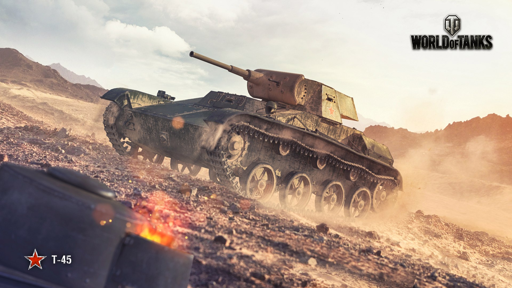
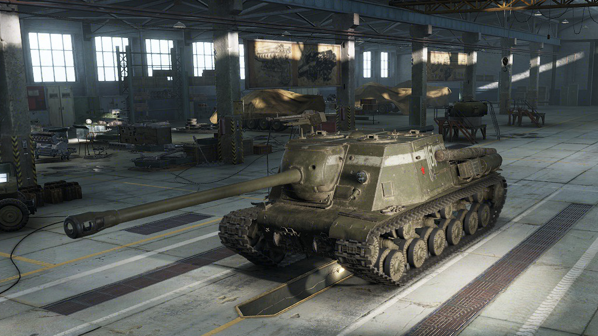

СССР
Т-45
|  |
Модернизированная версия танка Т-60.
От оригинала отличалась усиленным бронированием и башней, в которую устанавливалось
45-мм орудие образца 1938 года и спаренный пулемёт ДТ.
Однако к июню 1942 года машина была признана устаревшей по сравнению с Т-70,
и серийный выпуск налажен не был. Тем не менее опытный образец был отправлен на фронт.
|
ИСУ-122С
|  |
Тяжёлая самоходная артиллерийская установка на базе танка ИС. На протяжении Второй мировой войны
машина выполняла функции мощного штурмового орудия и истребителя танков.
Прототип был построен на ЧКЗ в апреле 1944 года. Машина была принята на вооружение 22 августа 1944 года.
Всего с августа 1944 до конца 1945 года было выпущено 675 ИСУ-122C.
|
США
T2 LIGHT TANK

|
Опытный образец машины был спроектирован и построен Rock Island Arsenal
в 1933 году. При разработке были использованы элементы ходовой части
и подвески британского танка Vickers Mk. E (Vickers "6-tonner").
Испытания прототипа Т2 показали высокие характеристики,
однако предпочтение было отдано модификации T2E1,
оказавшейся более приспособленной для преодоления пересечённой местности.
|
T28 Concept

|
Разработка тяжёлого танка прорыва началась в сентябре 1943 года.
Департаментом вооружений планировалось использовать узлы и
агрегаты танка М6, электромеханическую трансмиссию и 105-мм
пушку Т5 в частично вращающейся башне с лобовым бронированием 203 мм.
Танк предназначался для прорыва укреплений немецкого Западного вала.
Проект был отклонён Сухопутными силами Армии США на
стадии эскизного проектирования. В ходе дальнейших работ
был модифицирован в тяжёлый танк прорыва Т95.
|


.jpg)